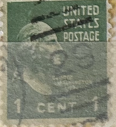
| SOURCE | TITLE| IMAGE MATCH | click to source page |
| www.ebay.com | Scott# 804 US Stamp 1938 1c Washington Used Prexie Great ... | 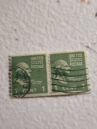 |
| www.ebay.com | George Washington 1 Cent Green Stamp 1789-1797 | eBay | 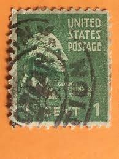 |
| www.ebay.com | George Washington 1c Very Rare Well Kept In Album By My Dad ... | 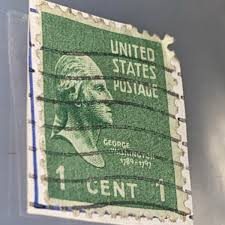 |
| www.hipstamp.com | 804 1 cent SUPER CANCEL George Washington Stamp used VF ... | 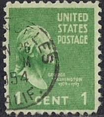 |
| www.mysticstamp.com | 804 - 1938 1c Washington, Green, Perf. 11x10.5 - Mystic ... | 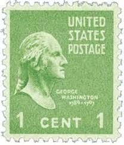 |
| www.alamy.com | George washington illustration Cut Out Stock Images ... | 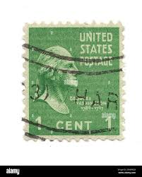 |
| www.facebook.com | are old stamps worth anything? | 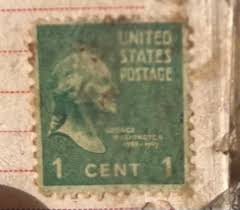 |
| www.etsy.com | George Washington 1 Cent Stamp: 1942 Postcard, Very Good ... | 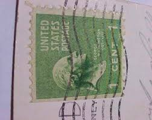 |
| www.bardostamps.com | Classic U.S. Stamps: Scott 848, 1c George Washington (Coil) | 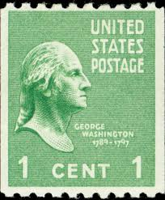 |
| thestampnut.com | Scott# 825 "GARFIELD" PLATE BLOCK (4) MNH *SEE DETAILS ... | 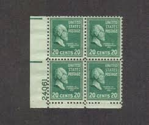 |
| www.dreamstime.com | Us stamp editorial photography. Image of paper, pattern ... | 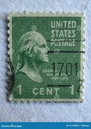 |
| mancsallateledel.hu | Stamp | 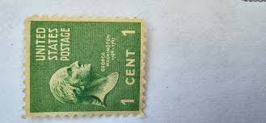 |
| www.youtube.com | Letters arrive 75 years late - YouTube | 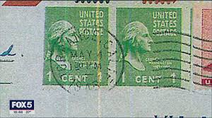 |
| www.istockphoto.com | One Cent George Washington Stamp Stock Photo - Download ... | 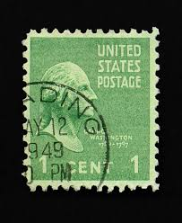 |
| www.ebay.com | George Washington, 1 Cent Stamp, Green, Catalog #839, Perf ... | 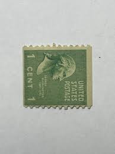 |
| www.facebook.com | Illinois abbreviation changed from "ill" to "il" in 1963 | 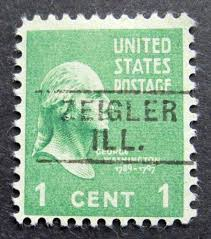 |
| www.reddit.com | I found these in my grandfather's keepsake box : r/stamps | 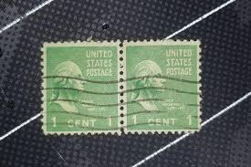 |
| en.todocoleccion.net | rare stamp of george washington - 2 cents. 1908 - Buy ... | 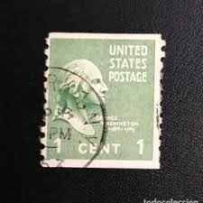 |
| www.etsy.com | 1938 George Washington 1c Stamp: Presidential Series, Scott ... | 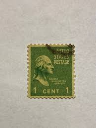 |
| www.mercari.com | Rare 1962 5 cent George Washington vintage | Mercari | 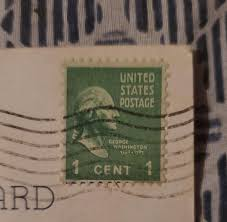 |
| www.ebid.net | US Stamp #804 used: 1938 Presidentials Series - 1c George ... | 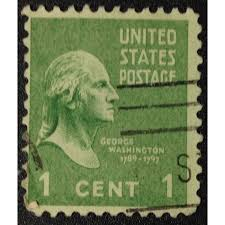 |
| offerup.com | Set of 8 Vintage Antique 1938 US 1 Cent George Washington ... | 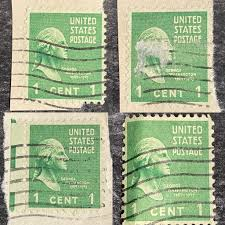 |
| www.mysticstamp.com | 839 - 1939 1c Washington, Green, Perf. 10 Vertically ... | 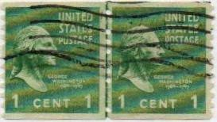 |
| www.kenmorestamp.com | Mis-Perforated U.S. Errors - Errors - USA | 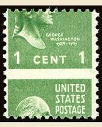 |
| www.stampcommunity.org | George Washington 1 Cent Stamp (Looking Right) On Unused ... | 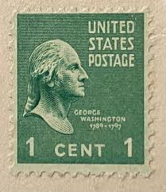 |
| www.pinterest.com | 310 Decatur Illinois ideas | decatur illinois, decatur, illinois | 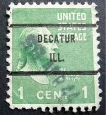 |
| heharris.com | U.S. Mint Booklet Panes: Pre-1960 | 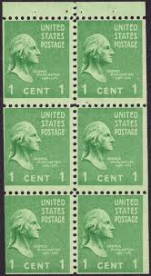 |
| usapostagestamps.com | USA Postage Stamps | Stamps of America | Year 1938 | 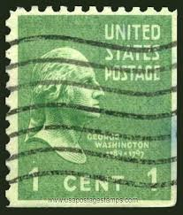 |
| blog.veve.me | USPS — Stamp Art — Presidential Series (1938) Series 1 ... | 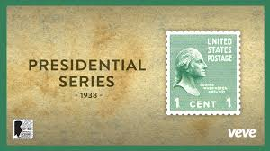 |
| www.mercari.com | 1938 - 1/2 Cent Benjamin Franklyn Rare | Mercari | 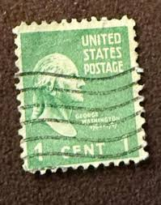 |
| venetiansalon.com | 40 Pack 6270 N Bailey Ave, Prescott, AZ 86305 - See Est ... | 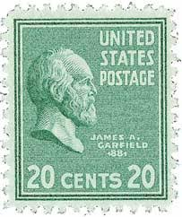 |
| www.ebay.com | RARE VINTAGE 1 CENT GEORGE WASHINGTON U.S. POSTAGE STAMP ... | 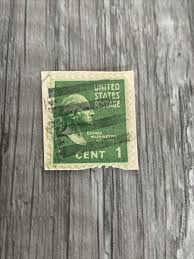 |
| www.usa-stamps.com | USA Stamps | Browse USA Stamps | Booklet Panes & ATM type ... | 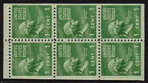 |
| www.shutterstock.com | 6+ Thousand Washington Stamp Royalty-Free Images, Stock ... | 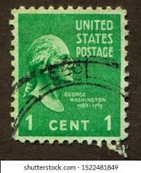 |
| www.reddit.com | Postcard stamps from the turn of the century early 1900's ... | 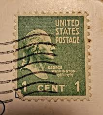 |
| findyourstampsvalue.com | Value of united states postage green george washington 1 ... | 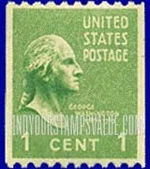 |
| postalmuseum.si.edu | Presidential Series (1938) | National Postal Museum | 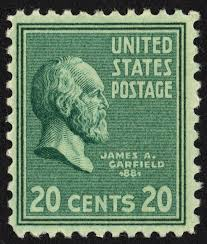 |
| en.wikipedia.org | State Line, Kentucky - Wikipedia | 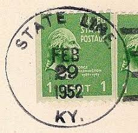 |
| www.etsy.com | Rare 1 Cent George Washington Stamp 1938 Green With Los ... | 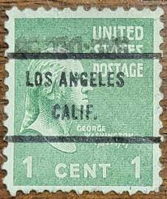 |
| www.facebook.com | What is the value of this George Washington stamp on an ... | 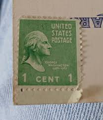 |
| nickgromicko.com | 1914, 1 cent green Washington stamps – Nick Gromicko | 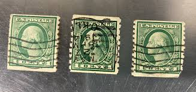 |
| www.hipstamp.com | 804 1 cent George Washington Stamp used F | United States ... | 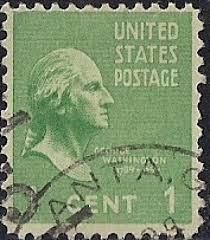 |
| www.linns.com | A survey of counterfeits, forgeries and other questionable ... | 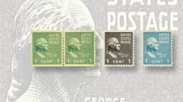 |
| www.alamy.com | Us postage stamp hi-res stock photography and images - Alamy | 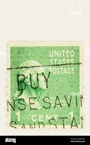 |
| www.usstamps.org | The Prexie Era | 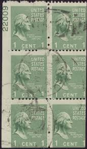 |
| www.mysticstamp.com | 423D - 1914 1c Washington, Green, Single Line Watermark ... | 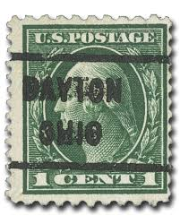 |
| esam.ir | تک آنتیک آمریکا | 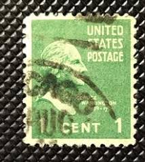 |
| www.leboncoin.fr | Feuille Timbres États Unis 1938 - Collection | 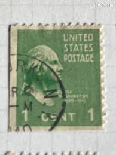 |
| thephilately.com | US 1938 Sc 804 George Washington Mi 411A for sale at The ... | 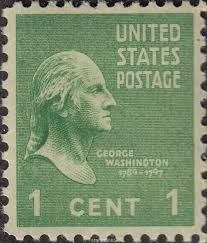 |
| anticipateinvitations.com | Green Vintage Postage Set (2 oz.) | Anticipate Invitations | |
| www.kitantik.com | Efemera - 1938 Amerika Washington per bobin - kitantik - kitaLog | |
| www.mercari.com | Rare stamps | Mercari | |
| www.ebay.com | Scott# ? US Stamp 1938 1c Washington Used Prexie Great Find ... | |
| www.stampcollectingblog.com | Introduction to United States Precancels | |
| www.youtube.com | USPS - 1938 Presidential Series (Prexies) - Series 1 | VeVe ... | |
| www.leboncoin.fr | USA timbre N°378 oblitéré - Collection | |
| shafa.ua | Рідкісна поштова марка сша, джордж вашингтон 1 цент — ціна ... | |
| www.usphila.com | US Stamps Price Scott Catalog # 147: 3c 1870 Washington ... | |
| www.istockphoto.com | Presidente Martin Van Buren Sello Postal Foto de stock y más ... | |
| rarestamps.collectionhero.com | Rare And Collectible Stamps : Green 1 Cent George Washington ... |